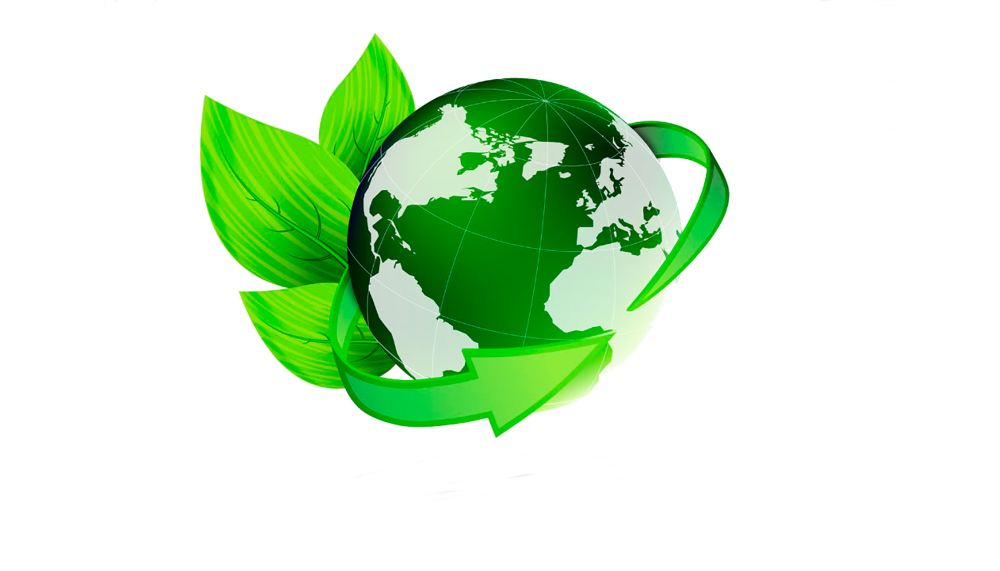

Brandon Stic Urrego Martinez
Elegí las bolsas de plastico porque son productos reutilizables. Mirando atrás, las antiguas bolsas se fabrican cada 2 segundos, se utilizan una media de 20 minutos y tardan más de 200 años en descomponerse. Por lo que sale más sano usar este tipo de bolsas reutilizables.
La empresa Flamenc ha sido la responsable de crear este tipo de productos. Esta empresa nace en África en el 2009. El motivo de ello fue porque al estar observando un continente infestado de bolsas de plásticoo y mares llenos de residuos decidieron empezar con este prodcuto. Las bolsas fueron creadas en Girona (Cataluña) hechas de algodón orgánico.
Esta empresa nace en África en el 2009 pero las bolsas fueron creadas en Girona (Cataluña) hechas de algodón orgánico.
Se hizo en 2009
Su principal motiviación fue el continente Áfricano por lo que ocurría. Tienen una calidad de tejido suave y orgánico, y estar hechas de algodón, además de estar certificada por GOTS Y OCCGuarantee.
Estas bolsas como en un inicio se dice, son totalmente reutilizables además, estas son de larga durabilidad y aparte de estar certificado respetan el medio ambiente y la salud e incluso al ser su tejido orgánico al tacto estos permiten conservar los alimentos sin añadir ningún tóxico. Ya que hay tejidos que no son orgánicos que contienen comopentes muy perjudicarles para nuestra salud, como los blanqueadores, bactericidad, disolventes entre otros.
Estas bolsas resultan muy interesantes y su uso es muy manejable a lo largo del día. La mayoría o en su totalidad de personas en el mundo resultan usando gran cantidad de bolsas "tóxicas" que dañan el medio ambiente y nuestra salud. Pero gracias a estas nuevas bolsas el resultado perjudicador cambia y aparece una nueva esperezan para la sociedad y el medio ambiente. Con estas bolsas se reduciría tanto el consumo y utilización de bolsas como la perjudicación en el entorno ambiental por lo que resultan muy favorables estas bolsas reutulizables.